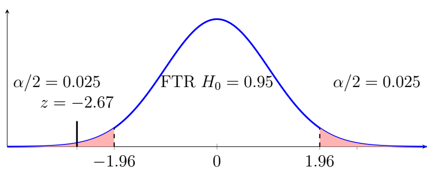
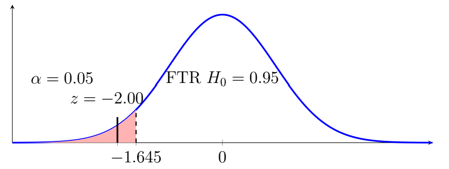
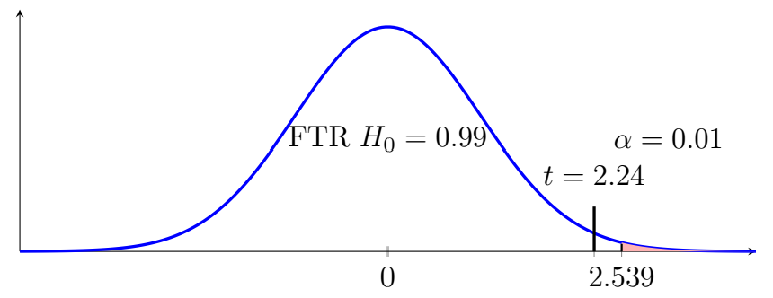

Chapter 9: Hypothesis Testing
Section 9.4: Hypothesis Test for a Population Mean
Test Statistics for a Population Mean
The \(z\) and \(t\) Test Statistics
When the population standard deviation is known, the standardized test statistic is
\[z=\frac{\bar{x}-\mu_0}{\sigma/\sqrt{n}}.\]When the population standard deviation is unknown, the one-sample \(t\)-statistic is
\[t=\frac{\bar{x}-\mu_0}{s/\sqrt{n}}\]with \(n-1\) degrees of freedom.
For large samples, the \(t\) distribution approaches the standard normal distribution, so the distinction becomes less important numerically.
For the one-sample \(z\) test to be appropriate, the sample should be random or otherwise appropriately selected, observations should be independent, the population \(\sigma\) should be known, and the sampling distribution of \(\bar{X}\) should be approximately normal.
For the one-sample \(t\) test to be appropriate, the sample should be random or otherwise appropriately selected, observations should be independent, the population should be approximately normal for small samples, there should be no severe outliers for small samples, and \(\sigma\) is unknown.
Worked Examples
Example 1
A manufacturer claims that batteries last 100 hours. A random sample of 64 batteries has \(\bar{x}=96\) and \(\sigma=12\). Test at the 5% significance level, using both the traditional method and the \(p\)-value method.
Solution
- Claim – Batteries last 100 hours.
- Complement of the claim – Batteries do not last 100 hours.
- Hypotheses – \(H_0:\mu =100\), \(H_1:\mu \neq 100\).
- Significance level – \(\alpha=0.05\).
- Select the test statistic – Since \(\sigma\) is known, \(z\).
- Compute the test statistic. \[z=\frac{96-100}{12/\sqrt{64}}=-2.67.\]
- Determine the critical values – For a two-tailed test at \(\alpha=0.05\), \(z_c=\pm 1.96\).

Two-tailed test: the test statistic z = −2.67 falls in the left rejection region. - Decision – Since \(-2.67<-1.96\), we reject \(H_0\). There is sufficient evidence to support the alternative hypothesis. We can see this graphically as \(z\) falls in the critical region.
- Conclusion – There is sufficient evidence at the 5% significance level to conclude that the population mean battery life differs from 100 hours.
Using the \(p\)-value method the area in the left tail for \(z=-2.67\) is \(0.0038\). Since this is a two-tailed test, we double that area to account for the right tail, resulting in a \(p\)-value of \(0.0076\).
Since \(0.0076<0.05\), we reject \(H_0\); there is sufficient evidence to support the alternative hypothesis. There is sufficient evidence to reject the manufacturer's claim and conclude the batteries do not last 100 hours.
Both methods yield the same result.
Example 2
A company claims that the average processing time for an application is \(45\) minutes. A manager believes that the actual average processing time is less than \(45\) minutes.
A random sample of \(36\) applications has a sample mean of \(42\) minutes. The population standard deviation is known to be \(9\) minutes. Test the claim at the \(\alpha=0.05\) significance level.
Solution
- Claim – Processing time is at least 45 minutes.
- Complement of the claim – Processing time is less than 45 minutes.
- Hypotheses – \(H_0:\mu \geq 45\), \(H_1:\mu<45\).
- Significance level – \(\alpha=0.05\).
- Select the test statistic – Since \(\sigma\) is known, \(z\).
- Compute the test statistic. \[z=\frac{42-45}{9/\sqrt{36}}=-2.00.\]
- Determine the critical values – For a left-tailed test at \(\alpha=0.05\), \(z_c=-1.645\).

Left-tailed test: the test statistic z = −2.00 falls in the rejection region. - Decision – Since \(-2.00<-1.645\), we reject \(H_0\). There is sufficient evidence to support the alternative hypothesis. We can see this graphically as \(z\) falls in the critical region.
- Conclusion – There is sufficient evidence to reject the company's claim and conclude the processing time is less than 45 minutes.
Using the \(p\)-value method the area in the left tail for \(z=-2.00\) is \(0.0228\). Since this is a left-tailed test, that is the entire area, \(p\)-value \(=0.0228\).
Since \(0.0228<0.05\), we reject \(H_0\); there is sufficient evidence to support the alternative hypothesis. We reject the company's claim and conclude the processing time is less than 45 minutes.
Example 3
A university claims that the average time students spend completing a particular assignment is \(12\) hours. A professor believes that students actually spend more than \(12\) hours on the assignment.
A random sample of \(20\) students has a mean completion time of \(13.5\) hours and a sample standard deviation of \(3\) hours. Test the professor's claim at the \(\alpha=0.01\) significance level.
Solution
- Claim – Completion time is no more than 12 hours.
- Complement of the claim – Completion time is more than 12 hours.
- Hypotheses – \(H_0:\mu \leq 12\), \(H_1:\mu>12\).
- Significance level – \(\alpha=0.01\).
- Select the test statistic – Since \(\sigma\) is unknown, \(t\).
- Compute the test statistic. \[t=\frac{13.5-12}{3/\sqrt{20}}=2.24.\]
- Determine the critical values – For a right-tailed test at \(\alpha=0.01\) with \(20-1=19\) degrees of freedom, \(t_c=2.539\).

Right-tailed test: the test statistic t = 2.24 does not fall in the rejection region. - Decision – Since \(2.24\leq 2.539\), we fail to reject \(H_0\). We cannot make a conclusion on \(H_1\). We can see this graphically as \(t\) falls outside the critical region.
- Conclusion – There is insufficient evidence to reject the claim that completion time is no more than 12 hours.
Using the \(p\)-value method, the area in the right tail for \(t=2.24\) is somewhere between \(0.010\) and \(0.025\). Since this is a right-tailed test, that is the entire area, so \(0.010<p<0.025\).
Since \(p\geq0.01\), we fail to reject \(H_0\). We cannot make a conclusion on \(H_1\). There is insufficient evidence to reject the claim that completion time is no more than 12 hours.